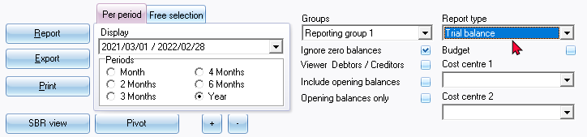
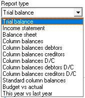
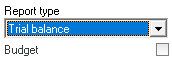
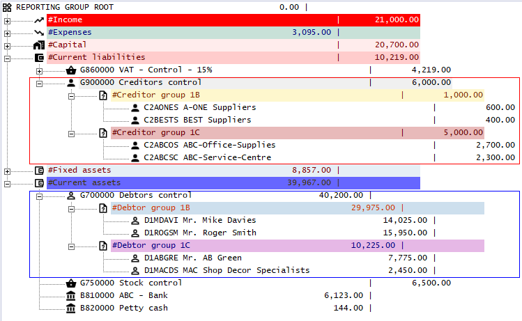

Ledger analyser
All processed (posted) transactions will be accumulated in the Ledger analyser 1 or Ledger analyser 2 (Reports ribbon). There are various ways in which the transactions may be viewed, exported and analysed.
The options, is as follows:
- Transactions and balances – These are the balances of transactions as posted (updated to the ledger) in batches (journals), sales documents (i.e. Invoices, Point-of-Sale Invoices and Credit notes) and purchase documents (i.e. Purchases and Supplier returns).
There are six (6) report types, which may be selected (i.e. Trial balance, Income statement, Balance sheet, Standard column balances, Budget vs actual and This year vs last year) which may be printed and exported to spreadsheets.
In addition to this, there are 6 report types which may be exported to spreadsheets (i.e. Column balances, Column balances Debit/Credit, Column balances debtor, Column balances creditor, Column balances debtor Debit/Credit, and Column balances creditor Debit/Credit.)
- Budget – Budget figures as entered in Budgets (Reports ribbon) or in the Setup → Accounts (Setup ribbon). This option, if selected, will list only the budget figures (Budget listing) in the Trial balance, Income statement, Balance sheet and Standard column balances report types. The Budget vs Actual is the budget performance report. It will list and compare the budget figures versus the actual posted (updated) transactions.
- T-Account viewer – You may select a specific account, group, etc. to view the transactions in the T-Account viewer. To do this, right-click on a selected account, and select the “Show details” option on the context menu.
|
|
The T-Account viewer may also be selected on the T-Account viewer on the Reports ribbon. When launching it from the Reports ribbon, you may select the following:
|

|
|
You may click on the following to get specific views of transactions:
|
Ledger analyser options
To print reports in the Ledger analyser:
- On the Reports ribbon, select Ledger analyser 1 / 2.

|
|
Ledger analyser 1 and Ledger analyser 2 Features implemented in osFinancials5:
|
- Select the following options:
|
Option |
Description |
|
Report type: |
|
|
Budget: |
This will list all accounts for which budget figures were entered (and / or edited) in Budgets (Reports ribbon) or the Setup → Accounts (Setup ribbon). If you wish to print a list of the Budget figures, tick the "Budget option" on the following report types:
|
|
Cost centre 1 / 2: |
The Cost centres (2 Groups) will only be available, if Cost centres are added in Groups (Setup ribbon); and if activated. |
|
Groups: |
Select one of the following options:
Reporting group 1 and 2 – The sequence in which the groups and accounts are listed, may be changed in Groups. (Setup ribbon). This is done by selecting the groups on the list and use the Move up or Move down buttons. |
|
Period: |
Select “Per period” or “Free selection”
|
|
From: To: |
The periods will automatically filter and display the periods matching the selected option in the “Per period” radio selection options. On the “Free selection” tab, you may select any date or dates in the “From date” and “To date” fields. |
|
Ignore zero balances: |
If this field is not selected, all accounts will be listed for the selected reports type. If you select (tick) this field; only those accounts with balances will be included in the report. |
|
Include opening balances: |
If this option is selected (ticked), it will include the opening balances of those accounts which have opening balances. If this option is not selected; the opening balances will not be included in the report. (Not applicable to the Income statement report type). |
|
Opening balances only: |
If the “Include opening balances” option is not selected; this option will not be displayed. If this option is available; you may select (tick) this option to include only the opening balances. All other balances will then be ignored. (Not applicable to the Income statement and Column balances report types). |
|
Viewer Debtors / Creditors: |
Do not select (tick) if you only need to view the balances of the Debtor's control account and Creditor's control account only. If this field is selected (ticked), it will list all the individual accounts in the following ledgers:
(Only applicable to the Trial balance and the Balance sheet report types). |
|
Report button: |
This will generate the report as per your selection of the report parameters. |
|
Export button: |
This will export the report to a comma separated value (*.csv) file format. The exported data will automatically be opened in your system's default spreadsheet (if configured) e.g. Excel. |
|
Print button: |
Click to print the report. |


- Select a group or account and right-click on it. On the context menu, select the “Show details” option. This will launch the T-Account viewer.
|
|
The T-Account viewer may also be selected on the T-Account viewer option (Reports ribbon). |
|
|
The Ledger analyser will not be automatically updated when batches or documents are updated (posted) to the ledger. You need to click on the Report button to rebuild (refresh) the report. |

|
|
Printing unposted batches in the Ledger analyser The Ledger analyser does not include unposted batches and documents. You may view, print and export a Trial balance, Income statement and Balance sheet for unposted as well as posted batches from the Batch entry (F2) context menu. |
Viewer Debtors / Creditors - Trial balance / Balance sheet
The Trial balance and the Balance sheet report types allows you to select the Viewer Debtors / Creditors option. This will list the individual debtor (customer / client) account balances for the Debtor's control account and the individual creditor (supplier / vendor) account balances for the Creditor's control account.
Do not select (tick) if you only need to view only the control accounts of the Debtor and Creditor accounts.
An example, in the "Trial balance" and "Balance sheet", listing the individual debtor (customer / client) and creditor (supplier / vendor) accounts, is as follows:

Export to CSV Files
The export feature of the T-Account Analyser allows you to create export files of any view of the data to the Comma Separated Value (*.csv) file format. You may then use your favourite Spreadsheet program (e.g. OpenOfficeCalc or Microsoft Excel, etc.) to analyse, sort and filter the data.
You may also build charts in your Spreadsheet program and use it to make powerful presentations in your presentation program (e.g. OpenOfficeImpress, Microsoft Powerpoint, etc.).
To create a Ledger Export report:
- Once finished, selecting your options, click on the Report button to update the Ledger analyser screen.
- You may then click on the Export button. This will launch the Save as screen.
- Select the folder in which you wish to save the file.
- The default file name will be ExportLedger. Overtype this with your own, if necessary. If you do not do this, you may replace existing (previously exported) files.
- Select the file type Comma Separated Value (*.csv).
- Click on the Save button. This will automatically open (launch) the file in the program associated with the Comma Separated Value file type (e.g. OpenOfficeCalc or Microsoft Excel, etc.).